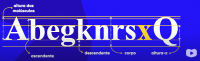
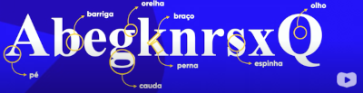

Estudo das Letras
Vídeos
Estudos do inicio
Quando falamos em tipografia, estamos falando do estudo das letras. Inicialmente falaremos sobre sua anatomia.
Tamanho:

Serífa: Utilizada para facilitar a leitura em papel, determinando uma linha imaginária! de tamanho
Anatomia Geométrica:
Anatomia Corporal:

Família Tipografica:
Categorias:
Serifadas
Sem Serifas
Monoespaçadas
Handwriting
Display
Vá para Styles
Vá para Estudo das Cores
Vá para Inicio